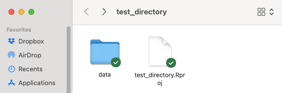
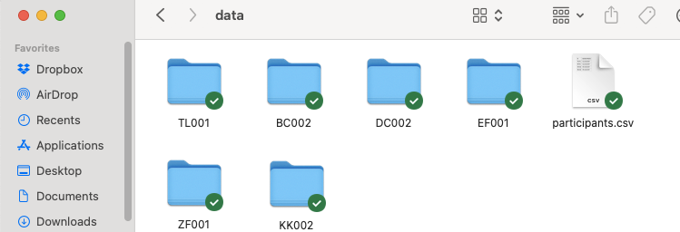
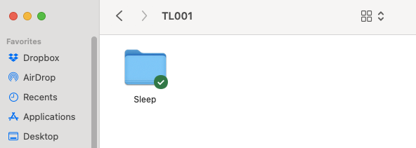
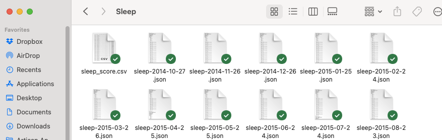

The goal of snoozr is to provide researchers with a toolkit for R to aid in the processing, description, and modeling of sleep data collected by FitBit trackers.
Installation
You can install the development version of snoozr like so:
# install.packages("devtools")
devtools::install_github("trackthatsleep/snoozr")Collaboration and Troubleshooting
Please submit any problems or feature requests via the snoozr issues page.
If you are interested in collaborating on the development of snoozr, please contact Dr. Lillis.
General use and required data management structure
snoozr currently has two primary user-facing functions to help with data extraction and processing: (1) scrapePerson() and (2) scrapeSample(). Both scrapePerson() and scrapeSample() requires:
- a user to have a folder called “data” in the current working directory (using R Projects is a good idea to ensure correct targeting of your intended directory)…

- in which there would be one or more subdirectories corresponding to data exported from a FitBit account for a particular user…

- in which (of each of 2.) there would be a subdirectory called “Sleep”…

- in which there would be one or more .json files containing the sleep data:

scrapePerson()
scrapePerson() is the function to use when you wish to convert the .json files of one user, into a flattened data frame for further description, visualization, and/or analysis. At bare minimum, scrapePerson() requires that you indicate the user id (i.e., subdirectory name) to target:
tl001.df <- scrapePerson(idTarget ="TL001")By default, scrapePerson() extracts event-level data, but it can optionally aggregate over a day if that format of data is preferred:
tl001.df <- scrapePerson(idTarget ="TL001", type = "day")If you prefer to also extract more granular data, there is an option for this as well, though be aware that parsing of this resolution can be quite time-consuming. When this option is set to TRUE, the data frame returned repeats event-level data for each instance that the fitbit device assessed (i.e., it returns a data set amenable to multilevel modeling)
tl001.df <- scrapePerson(idTarget ="TL001", rawdata = TRUE)Other potentially helpful options include:
-
birthdf = TRUE: to use a provided .csv (with data on participant infant birth-dates) to code for pregnancy phases -
export = TRUE: to export a .csv of the participant’s data to your working directory (e.g., for use in other programs) -
epoch = 30(which requiresrawdata = TRUE): to return a df binned into 30 second epochs -
anon = TRUE: to return a data frame with anonymized participant ID’s (instead of subdirectory names); particularly useful if you are anticipating to export the data and share with others
scrapeSample()
scrapeSample() is the function to use when you wish to convert the .json files of all users, into a flattened data frame for further description, visualization, and/or analysis. Its arguments mostly parallel those of scrapePerson(), and users need not supply a target ID (as in scrapePerson()) as scrapeSample() will simply identify all unique subdirectories (i.e., for each participant) in your data subdirectory. Users should be aware that using scrapeSample() with rawdata = TRUE (with or without epoch = 30) can be especially time-consuming.
samp.df <- scrapePerson(rawdata = TRUE)